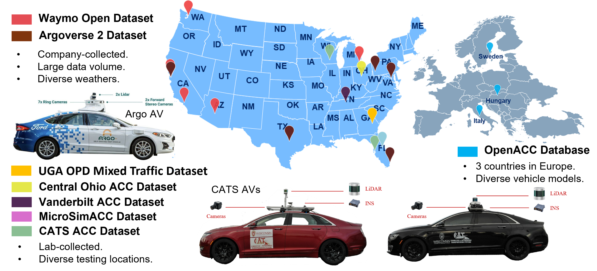

Data
Dataset background and data contribution context.
Original Data Sources
The OpenPAV dataset currently examines 14 open-source PAV datasets from 7 providers.
- Argoverse 2 Motion Forecasting Dataset. Collected from Austin (Texas), Detroit (Michigan), Miami (Florida), Pittsburgh (Pennsylvania), Palo Alto (California), and Washington, D.C. by Argo AI with researchers from Carnegie Mellon University and the Georgia Institute of Technology. Available at Argoverse 2 Motion Forecasting Dataset.
- CATS Open Datasets. Three datasets collected in Tampa (Florida) and Madison (Wisconsin) by the CATS Lab. Available at CATS Lab.
- Central Ohio ACC Datasets. Two datasets collated in Ohio by UCLA Mobility Lab and Transportation Research Center. Available at Central Ohio ACC Data.
- MicroSimACC Dataset. Collected in Delray Beach, Loxahatchee, Boca Raton, and Parkland (Florida) by the Florida Atlantic University research group. Available at microSIM-ACC.
- OpenACC Database. Four datasets collected across Italy, Sweden, and Hungary by the European Commission Joint Research Centre. Available at data.europa.eu OpenACC.
- Vanderbilt ACC Dataset. Collected in Nashville (Tennessee) by Vanderbilt University. Available at Adaptive Cruise Control Dataset.
- Waymo Open Dataset. Two datasets collected in San Francisco, Mountain View, and Los Angeles (California), Phoenix (Arizona), Detroit (Michigan), and Seattle (Washington) by Waymo. Available at Waymo Motion Dataset and Processed Waymo Trajectory Data. (Notice that Waymo states this dataset contains mixed AV/HV data with no label.)

Processed Unified Dataset & Download
OpenPAV processed and organized the sources above into a unified longitudinal trajectory dataset ULTra-AV, where all records follow a standardized format. The first stage trajectory data can be found in OpenPAV-trajectory. You can also check our publication:
- Zhou, H., Ma, K., Liang, S., Li, X., and Qu, X. (2024). A unified longitudinal trajectory dataset for automated vehicle. Scientific Data, 11, 1123. [Paper] [GitHub].
Download data-processing related code package:
Data Process CodeUpload Data
For data submissions, please upload through the data repository OpenPAV-trajectory. If you have any question, please contact technical contributor Hang Zhou (hzhou364@wisc.edu).